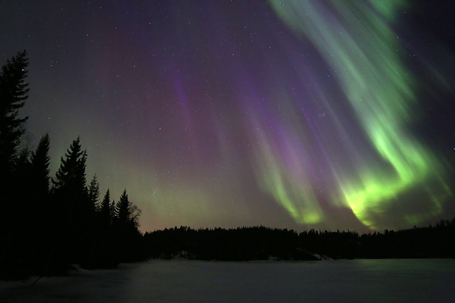
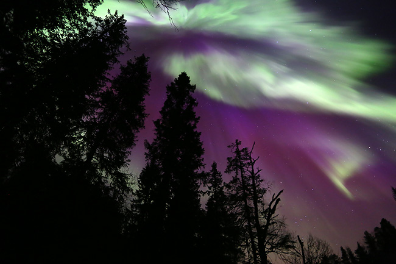
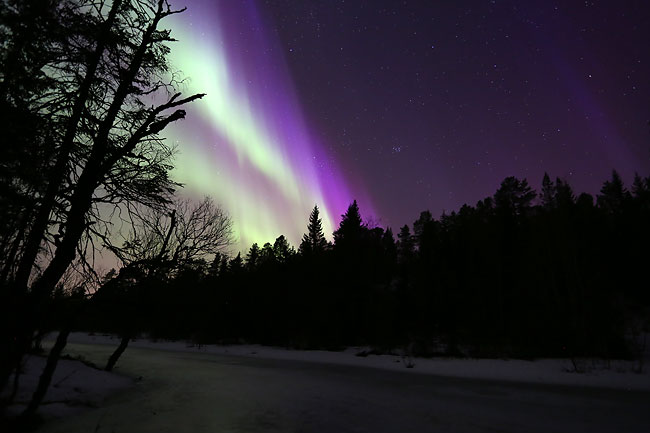
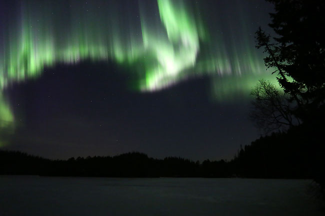
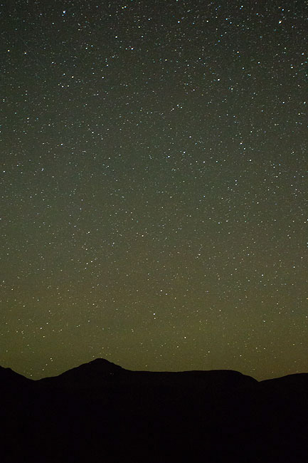
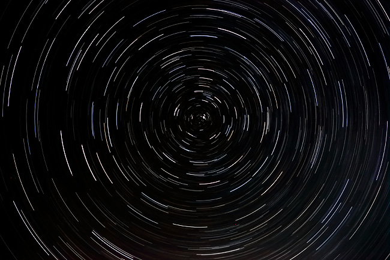

Nordlys
Tekst/foto: Jens Ludvig Larssen
Publisert: 20.03.2015
En ettermiddag denne uka fikk jeg varsel om KP-indeks 8 på nordlysappen jeg har på mobiltelefonen. KP-indeksen har en skala fra null til ni, og muligheten for å se nordlys er bedre jo høyere tallet er. Jeg har hatt denne appen installert i over ett år, men har aldri mottatt varsel på mer enn 5, -så jeg skjønte at dette var heftige greier. Fotoutstyret ble derfor pakket, og med hodelykt gikk turen til Kvennvatnet på Støren. Her kom jeg unna lysforurensningen fra hus og biler, og fikk oppleve et nordlys jeg ikke har sett maken til.    
En himmel full av stjerner
Tekst/foto: Jens Ludvig Larssen
Publisert: 20.12.2014

I høst har det vært mye klarvær, og dermed gode muligheter til å se stjernehimmelen. Best blir det når man er i fjellet og slipper unna lysforurensningen fra sivilisasjonen.
Bildet til høyre viser den velkjente konturen av fjellet Forollhogna når stien fra Synnerdalen til toppen kommer over tregrensen. Man får litt perspektiv på saker og ting når man er alene i fjellet med Melkeveiens milliarder av stjerner over seg. Eneste spor av menneskelig aktivitet var de mange flyene som passerte. Jeg fikk derfor mange bilder som har ei stripe av lys fra flyet. Dette skapte en ganske stilig effekt, men jeg foretrekker nå likevel bildene uten lysstripe.
Bildet under ble tatt med en eksponeringstid på 70 minutter. Stativ er selvfølgelig helt nødvendig for å få det til. Jeg siktet inn kameraet slik at Polarstjerna, eller Nordstjerna som den også kalles, kom midt i bildet. Polarstjerna står i jordas rotasjonsakse, og man finner den ved å forlenge linja mellom de to bakerste stjernene i Karlsvogna fem ganger oppover. Med Polarstjerna midt i bildet vises jordrotasjonen svært godt. Strekene hver stjerne lager viser hvor mye jorda roterte på de 70 minuttene bildet ble tatt. En kan se at fargen ikke er helt lik på stjernene. Dette skyldes at stjernene faktisk avgir forskjellig farge.
